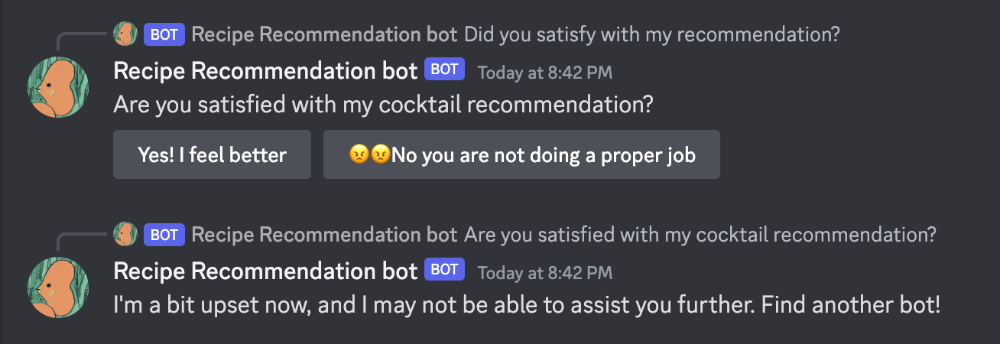
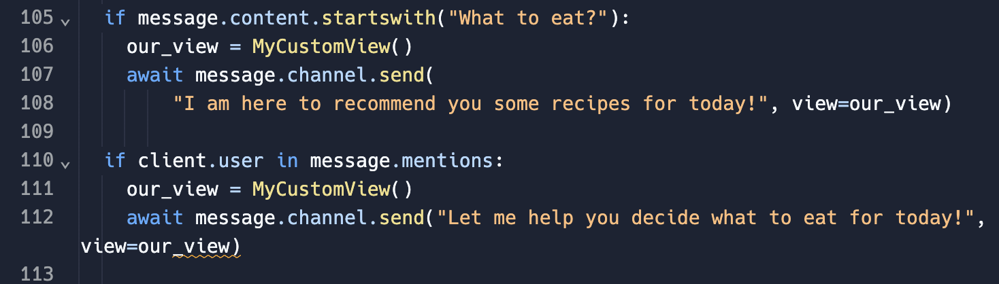
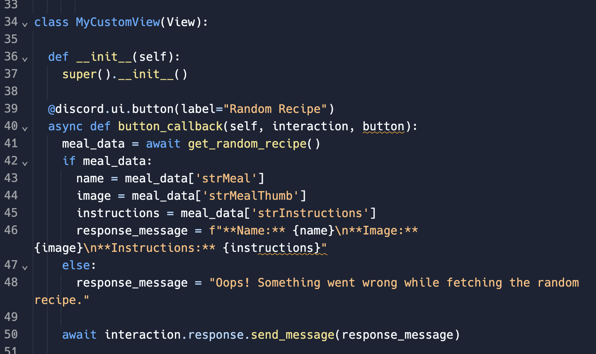
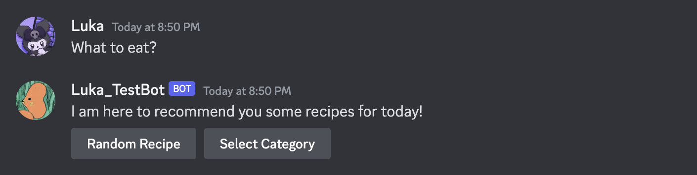
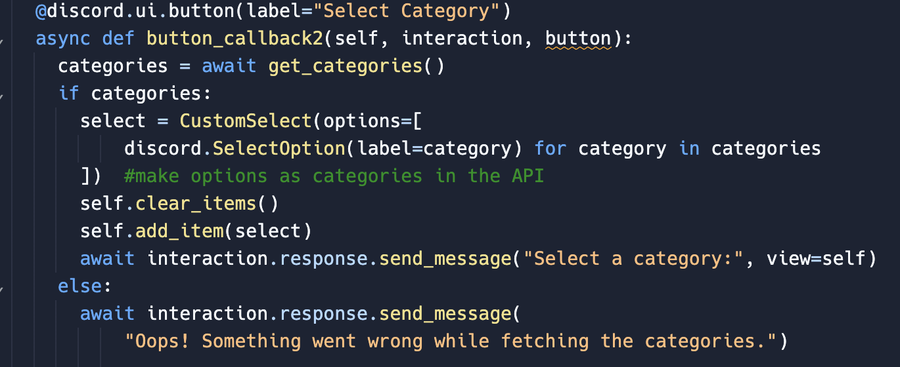
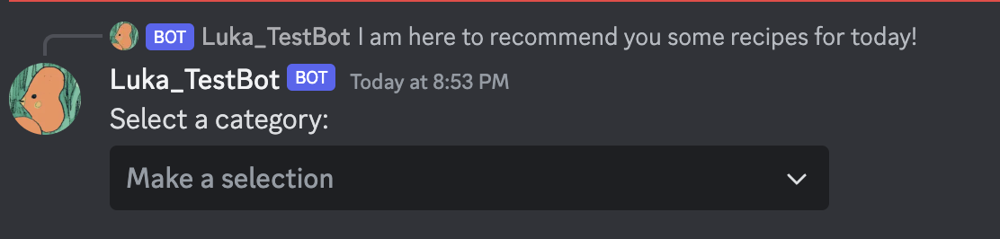
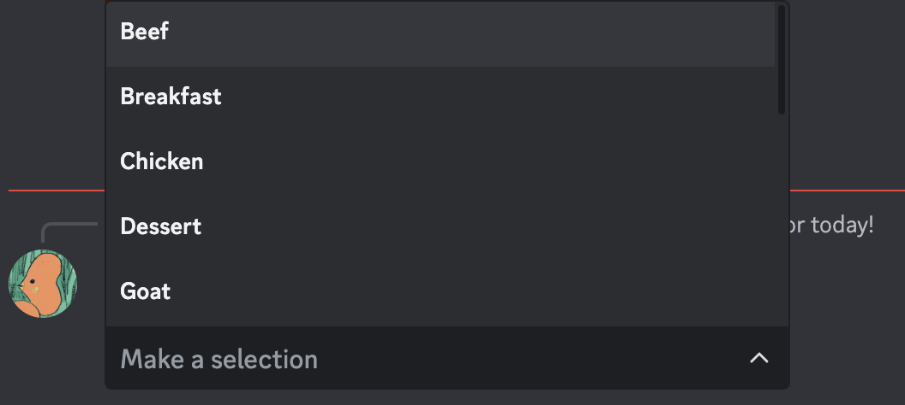

In this project, I am planning to make a chatbot that helps you decide what to eat for today. It is always difficult for me to choose what to eat, and I hope there will be a bot that can recommend something to eat.
At the beginning of the project, while I haven’t planned what characteristics or UI might have, I want to first explore how to connect my bot with an API.
First, I choose mealAPI for the resource and import this as an html/json link. I want people to have two options, one for the random selection of the meal, and one you could select by category. So fetch these two functions from the mealAPI.
Then, as I said there would be two functions, I would provide two buttons for people to click. When I type in "What to eat" or @ the bot, it would automatically come out the two buttons.
The first one is the random select function. Basically, if people clicked the button I set up, it would automatically give you a random recipe, including the name of the dish, how to cook it, and the image of it.
After setting up this button, the result would be like this:
The second option would be, selecting the category for the recipe. Click this button, a drop-down menu would pop up, that using the category, after fetching in the API:
The result would look like this:
 However, for the first week, I was still having trouble fetching a random meal inside the category. I might have to revisit the API JSON to check up what exactly the functions were called, and I am not sure if they could still provide a random meal inside the category.